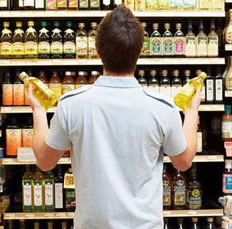

What are you going to discover?
Food permeates our lives. We often underestimate the power of food on our health and on the world in which we live. This project aims at giving little, useful insights on the properties that commercially available products have on our daily living. In particular, we will try to guide users to better nutritional habits, by introducing a food score and showing the case study of France.
-

First Step
Handling the data
The analysis is performed on 9 food categories. In order to recover missing data, some nutritional values (like energy or protein concentration for product) were used as features for classification.
-

Second Step
Product Advisor according its Category
We defined our own nutritional score based on the Energy value, on the Nutritional French score and on the Number of ingredients with palm oil of each food product to advise the consumer about the healthiness of the products for each category.
-
Third Step
Brands VS Score
We focus on French brands and we analyse the nutritional score and the number of ingredients containing palm oil for their products.
-
Last Step
Product Advisor According French Brands
We deduce a final score for all the French brands based on how much they produce healthy products.
-
Be Part
Of Our
Story!


 Â Â Â Â Â Â Â Â
       Â
       Â
          A large majority (87%) of the products in France don't contain palm oil !
       Â
       Â
       Â
          A large majority (87%) of the products in France don't contain palm oil !